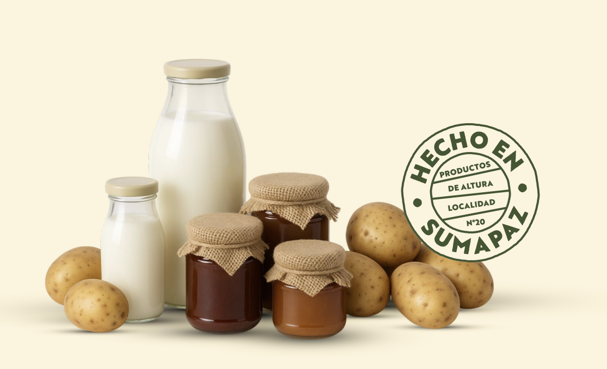

Bienvenido al Directorio de Proveedores de la Localidad de Sumapaz, un espacio creado para conectar directamente a los productores locales con compradores, comerciantes y emprendedores que buscan productos frescos, auténticos y cultivados con el esfuerzo de nuestra comunidad campesina.
Aquí encontrarás contactos de proveedores de papa, yuca, arveja, cebolla, hortalizas, frutas, lácteos, miel, y muchos otros productos del campo sumapaceño.
Cada productor representa una historia de trabajo, tradición y sostenibilidad que mantiene viva la economía rural y fortalece el territorio.
Próximamente verás aquí los productos más destacados de nuestro territorio.